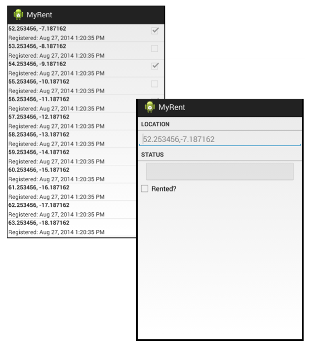
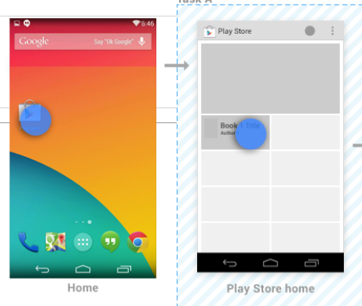
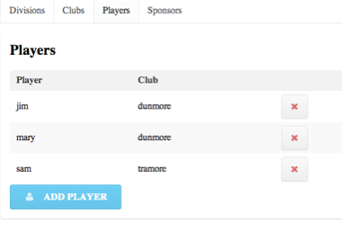
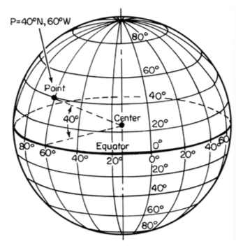
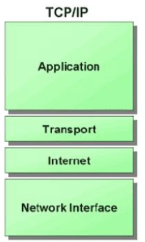
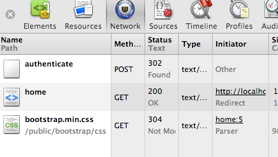
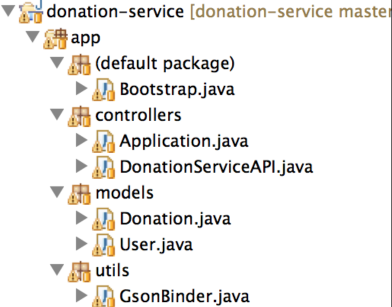
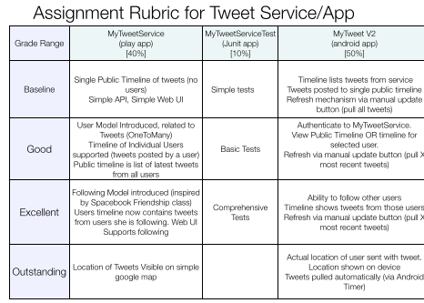

Android Overview
Android Application Development


Here we explore the general context of the android User Experience, it's role in the mobile platform space and the components that make up the the system. We are particularly interested in the version numbers and how version in general is managed.
Android UX

Android introduced a new user interface language to the world, one that is gradually evolving in flexibility and expressiveness. Here we review the principle elements of this language and how its is incorporated into attractive and usable applications
Donation 01 Application

The first application exhibits a range of new concepts you will not have come across before. Here we tour this app in detail, exploring each of the artifacts we have composed, and attempt to get a sense of how they fit together to form a running app.
Application Structure

Android, like IOS, has introduced a new visual language for interaction on the devices it supports. This language is different from previous graphical environments (Windows, OSX), and is optimised for touch based interaction. Here we review some of the major elements of this language and become acquainted with the some of the primary interaction patterns.
Donation-android V2

If you have completed this lab (but not the exercises yet) then we can review your achievements so far, and closely inspect the code we introduced to accommodate the new activity + the list. We will also review the challenges.
Donation Android V3

These slides present the solution to the series of challenges in the Donation-02 lab, a series of 8 'challenges' introducing new feature into the donation app.
Donation Models

This simple application is already composed of a range of classes related to each other in via different types of relationships. We can capture this design graphically in UML, exploring the true nature of the structure of the app.
MyRent V00

We should now begin to have a firm understanding of structure of an android project as presented in Studio. Here we review the MyRent v00 in detail, and review all its working parts
MyRent V01

Although the app is still relatively simple, this app crosses a threshold in our understanding of Android.The Activity class implements multiple interfaces, each implementation responding to different widgits. Here we review this in detail, as it represents a pattern we will see in most of the application we develop.
The Android Stack

Android is a sophisticated, multi-layered operating system encompassing a wide range of features, capabilities and components. This is organised into a 'Stack', whereby each layer communicates with the layer immediately below. Here we review this stack and briefly examine the primary components at each layer.
MyRent02

We review the structure, model and code in the MyRent 01 and 02 applications. The application at this stage has 2 views - sometimes called a 'Master-Detail' pattern. The Master presents a list of items which, if selected, will launch a detail view presenting the individual items. The List if items is randomly generated at application startup, and cannot be extended.
Event Handling

Central to almost all Android applications is the notion of an event. How events are intercepted and handled is an aspect of all android programmes. Here we review the underlying Java mechanisms used in this context
Assignment 1

This is the specification for the first assignment. When you complete the MyRent labs, you should consider turning your attention to this specification here, and move on with one of the required features. Sometimes you may have to do some independent research.
Application Structure

Android, like IOS, has introduced a new visual language for interaction on the devices it supports. This language is different from previous graphical environments (Windows, OSX), and is optimised for touch based interaction. Here we review some of the major elements of this language and become acquainted with the some of the primary interaction patterns.
Navigation Principles I

We have already explored the primary Android UX. Here we focus specifically on navigation within an android application, examining some typical patterns. In particular, we explore navigation within a single application, which can yield some interesting and surprising subtleties.
Activities Fundamentals

The Activity is at the heart of almost all android applications. You have already experience in designing and implementing a number of simple ones. Here we review the general nature of activities and define the principle the concerns of the programmer has to bear in mind.
Navigation into Apps

Last time we explored briefly navigation within an app. In this session we continue this discussion, with a focus on navigation from the users perspective, looking at how a user can arrive into an app, and also how they may move between apps.
File Formats

To date we have seen a small number of file formats for data, namely CSV and YAML. These are common and well suited to a range of simple applications. In Android we often use XML and Json. Here we review examples of all of these briefly.
Streams

The android SDK comes with a subset of the Java JDK libraries. This subset is significantly reduced from the range available in the JDK. Among these is the Streams library, which we use for simple file I/O.
File IO in MyRent

In MyRent Lab 04 we incorporated a simple serialization mechanism to write Java objects to a Json file format. This required some significant enhancements to the models package, including a completely new Serializer class. Here we review these classes in detail.
Up Support

Navigating "up" (as opposed to 'back') must be explicity implemented in the application. It involves enabling the up button in the action bar, handling the resultant event and also declaring the parent/child relationship in the manifest.
Fragments

Test Driven Development

Testing is now considered an integral part of the programmers job. TDD is a technique that promotes reasonable simple unit test as precursor to implementation, significantly enhancing the robustness of the classes under test.
TDD in Play

The Play framework has very specific test support - facilitated via a variant of the JUnit libraries. This enables play applications to be launched in 'test' mode, and specific simple tests executed on the application classes.
Blog Model

The focus on the tests for the moment is the Model classes only. In the lab you will attempt to build tests for the WitPress app. Here we review this model in this app in preparation the lab.
ViewPager

In order to support 'swipe' between views at a specific level, we incorporate ViewLager support into the class.
JPA I - OneToMany, ManyToOne

The simplest relationship to model in JPA in OneToMany, and an associated ManyToOne in the reverse directions. Here we explore this via a simple example, including an examination of the generated database tables.
JPA II - ManyToMany

ManyToMany relationships need to be carefully created and removed. They generated an extra database table. Removal is particularly tricky, and must be done in an orderly manner.
JPA UI

The models developed in JPA I and II can be usefully explored either in the database admin interface, or via a simple bolt-on UI. Here we explore both.
Android Map

Camera

A review of a number of techniques for acquiring and manipulating images taken by the Camera under Android.
MyTweet Assignment 1

A review of assignment 1 results.
The assignment comprised the development of a prototype Twitter client.
HTTP Protocol

HTTP is the heartbeat of the Web, and the key protocol through with both applications and services communicate. A general understanding of it is a key part of a developers knowledge base.
Tracing HTTP

Most browsers come with built in tools to let the developer explore the http interactions. As the it is text based, we can examine and interpret the requests and responses without too much difficulty.
APIs

An Application Programmer Interface is the published set of http endpoints and messages that a service can support. API design and implementation is a rich field of study - here we take a general overview.
donation-service-play

This is our first attempt at implementing an API. It comprises essentially of a set of routes (the end points), controllers for these routes + a mechanisms for translating Java objects to/from the Json format.
Donation Service Test

A standard Java project to implement a JUnit set of tests of the donation Service API. This is essential to ensure the stability and robustness of the REST interface.
Assignment 2

This the specification and grading guidelines for Assignment 2 - MyTweetService + Test + Android App.
donation-service-play

A revision of the donation-service to include 1 to many relationship between donor and donation.
Donation Service Test

A standard Java project to implement a JUnit set of tests of the donation Service API. These tests now test the revised API, including the one-to-many relationship
Donation Android

Rework the android donation application to access and update the REST interface exposed by donation-service.